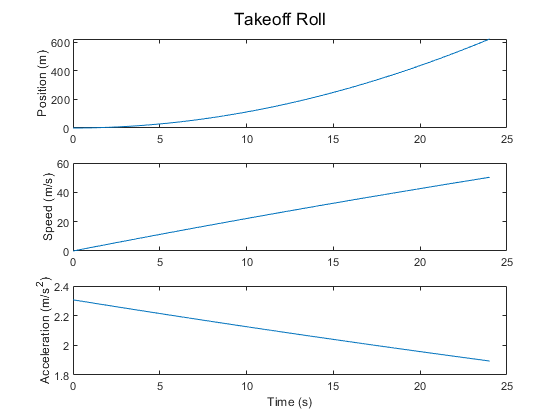
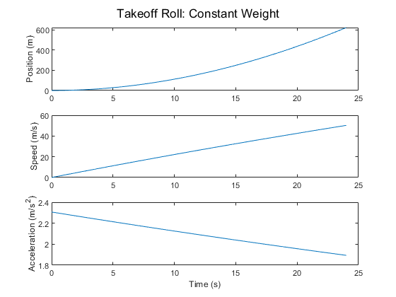
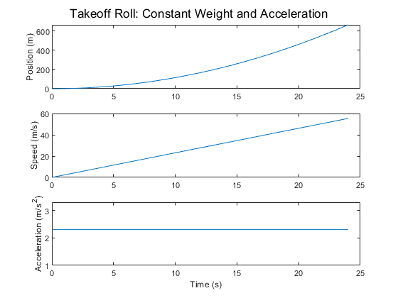
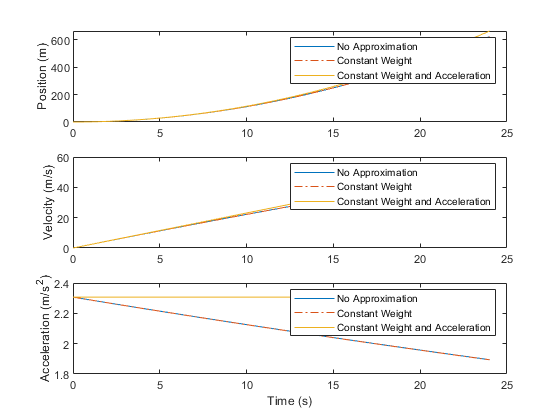

Contents
close all; clear all; clc;
Takeoff Roll
rho = 1.18995;
R = 287;
T =288.15;
gamma = 1.4;
Papt = 97716.6;
P0 = 101325;
kdelta = Papt/P0;
ft2meter = 0.3048;
h = 542*ft2meter;
ss = sqrt(T*R*gamma);
Cd = 0.025;
Cl = 0.349;
S = 125;
Fstatic = 216000;
K0_h2f = 1;
k1_h2f = 3.281*10^-5;
k2_h2f = 10.764*10^-9;
const_F = kdelta*Fstatic*(K0_h2f+k1_h2f*h+k2_h2f*h^2);
k_0_M2F = 1;
k_1_M2F = -1.07;
k_2_M2F= 0.56;
k_prime_F0 = k_0_M2F;
k_prime_F1 = k_1_M2F/ss;
k_prime_F2 = k_2_M2F/ss^2;
delt = 0.01;
t= 0:delt:24;
g = 9.81;
mu = 0.03;
Wdot = 9;
p1 = zeros(length(t),1);
v1 = zeros(length(t),1);
a1 = zeros(length(t),1);
W1 = zeros(length(t),1);
T1 = zeros(length(t),1);
L1 = zeros(length(t),1);
N1 = zeros(length(t),1);
D1 = zeros(length(t),1);
T1(1) = const_F*(k_prime_F0 + k_prime_F1*v1(1) + k_prime_F2*v1(1)^2);
W1(1) = 790100;
N1(1) = W1(1);
a1(1) = g/W1(1)*(T1(1)-D1(1)-mu*N1(1));
for i=1:length(t)-1
p1(i+1) = p1(i)+v1(i)*delt;
v1(i+1) = v1(i)+a1(i)*delt;
W1(i+1) = W1(i)-Wdot*delt;
T1(i+1) = const_F*(k_prime_F0 + k_prime_F1*v1(i+1) + k_prime_F2*v1(i+1)^2);
L1(i+1) = 0.5*rho*v1(i+1)^2*S*Cl;
N1(i+1) = W1(i+1)-L1(i+1);
D1(i+1) = 0.5*rho*v1(i+1)^2*S*Cd;
a1(i+1) = g/W1(i+1)*(T1(i+1)-D1(i+1)-mu*N1(i+1));
end
subplot(3,1,1)
plot(t,p1)
ylabel('Position (m)')
subplot(3,1,2)
plot(t,v1)
ylabel('Speed (m/s)')
subplot(3,1,3)
plot(t,a1)
ylabel('Acceleration (m/s^2)')
xlabel('Time (s)')
sgtitle('Takeoff Roll')
v1(end)
ans =
50.2612

Constant Weight Takeoff Roll
p2 = zeros(length(t),1);
v2 = zeros(length(t),1);
aa2 = zeros(length(t),1);
W2 = 790100;
const_D = 0.5*rho*S*Cd;
const_L = 0.5*rho*S*Cl;
a = g/W2*(const_F*k_prime_F2-const_D+mu*const_L);
b = g/W2*(const_F*k_prime_F1);
c = g/W2*(const_F*k_prime_F0-mu*W2);
fprintf('Analytical expression for the acceleration of the aircraft as a function of time: \n')
fprintf('v^2(g/W2*(const_F*k_prime_F2-const_D+mu*const_L))+v(g/W2*(const_F*k_prime_F1))+g/W2*(const_F*k_prime_F0-mu*W2)) \n')
syms vv time
a2 = vv^2*a+vv*b+c;
T = int(1/a2);
intConstant = subs(T,0);
T = int(1/a2)-intConstant;
vv = solve(T==time,vv);
aa2(1)= subs(a2,v2(1));
for i = 1:length(t)-1
p2(i+1) = p2(i)+delt*v2(i);
v2(i+1) = subs(vv,t(i+1));
aa2(i+1)= subs(a2,v2(i+1));
end
figure,
subplot(3,1,1)
plot(t,p2)
ylabel('Position (m)')
subplot(3,1,2)
plot(t,v2)
ylabel('Speed (m/s)')
subplot(3,1,3)
plot(t,aa2)
ylabel('Acceleration (m/s^2)')
xlabel('Time (s)')
sgtitle('Takeoff Roll: Constant Weight')
Analytical expression for the acceleration of the aircraft as a function of time:
v^2(g/W2*(const_F*k_prime_F2-const_D+mu*const_L))+v(g/W2*(const_F*k_prime_F1))+g/W2*(const_F*k_prime_F0-mu*W2))
Warning: Solutions are only valid under certain conditions. To include
parameters and conditions in the solution, specify the 'ReturnConditions' value
as 'true'.

Constant Weight and Acceleration Takeoff Roll
p3 = zeros(length(t),1);
v3 = zeros(length(t),1);
a3 = ones(length(t),1);
W3 = 790100;
T3 = const_F;
N3 = W3;
a3 = a3*g/W3*(T3-mu*N3);
for k = 1:length(t)-1
p3(k+1) = p3(k)+v3(k)*delt;
v3(k+1) = v3(k)+a3(k)*delt;
end
figure,
subplot(3,1,1)
plot(t,p3)
ylabel('Position (m)')
subplot(3,1,2)
plot(t,v3)
ylabel('Speed (m/s)')
subplot(3,1,3)
plot(t,a3)
ylabel('Acceleration (m/s^2)')
xlabel('Time (s)')
sgtitle('Takeoff Roll: Constant Weight and Acceleration')

Comparison d)
figure,
subplot(3,1,1)
plot(t,p1)
hold on,
plot(t,p2,'-.')
hold on,
plot(t,p3)
ylabel('Position (m)')
legend('No Approximation','Constant Weight','Constant Weight and Acceleration')
subplot(3,1,2)
plot(t,v1)
hold on,
plot(t,v2,'-.')
hold on,
plot(t,v3)
ylabel('Velocity (m/s)')
legend('No Approximation','Constant Weight','Constant Weight and Acceleration')
subplot(3,1,3)
plot(t,a1)
hold on,
plot(t,aa2,'-.')
hold on,
plot(t,a3)
xlabel('Time (s)')
ylabel('Acceleration (m/s^2)')
legend('No Approximation','Constant Weight','Constant Weight and Acceleration')
fprintf (['The full model and the constant weight approximation model has almost identical \n'...
'velocities and postion while the constant acceleration and weight model shares the same trend \n' ...
'and is off in velociites and position estimates deviate at an increasingly rate as the time increases. \n'])
fprintf(['The psoition and velocities in the constant acceleration are greater than the other two models \n '...
'This error is due to the model not accounting for the increase in drag as the speed increases. Therefore, \n'...
'the velocities increases constantly and the plane travels further than the other two models. Also, I expected \n'...
'a decrease in velocity when only the weight was kept constant because weight is inversely proportional to\n'...
'the acceleration, but I didn''t see a much different in the velocities between the constant weight model. \n'...
'Constant weight could have affected the velocity if the simulation was longer, but it the given amount of time \n'...
'constant weight didn'' have a huge impact on the simulation.'])
The full model and the constant weight approximation model has almost identical
velocities and postion while the constant acceleration and weight model shares the same trend
and is off in velociites and position estimates deviate at an increasingly rate as the time increases.
The psoition and velocities in the constant acceleration are greater than the other two models
This error is due to the model not accounting for the increase in drag as the speed increases. Therefore,
the velocities increases constantly and the plane travels further than the other two models. Also, I expected
a decrease in velocity when only the weight was kept constant because weight is inversely proportional to
the acceleration, but I didn't see a much different in the velocities between the constant weight model.
Constant weight could have affected the velocity if the simulation was longer, but it the given amount of time
constant weight didn' have a huge impact on the simulation.
